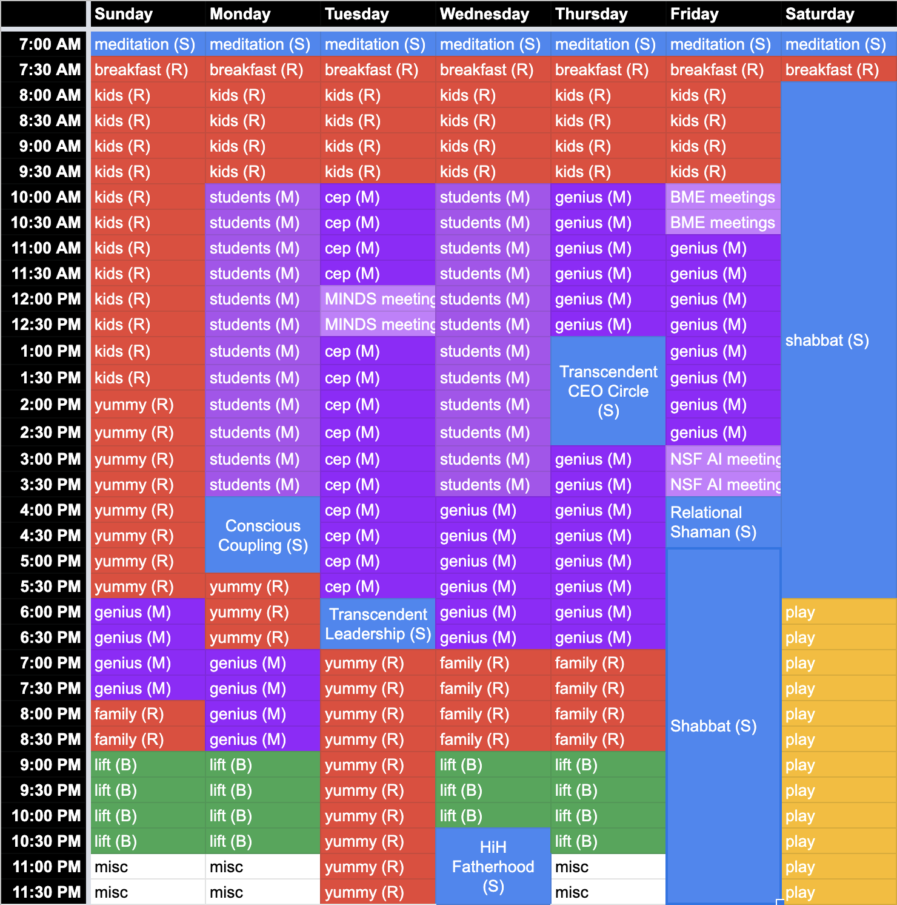

# .left[Jovo++] <center>  </center> Joshua T. Vogelstein, PhD ( [jovo@jhu.edu](mailto:jovo@jhu.edu), <img src="assets/img/twitter-logo.png" align='top' width=25><a href="https://twitter.com/neuro_data" >@neuro_data</a>) <br> [Biomedical Engineering](https://www.bme.jhu.edu/) | [Johns Hopkins University](https://www.jhu.edu/) --- ## wtf have i been doing? A journey of personal growth and transformation - psychotherapy - consciousness coaching - parenting/fatherhood coaching - couples coaching - transendent leadership coaching - relational shamanism - medicine journeys - retreats - leadership training - consciousness training - family journeys --- ## what have i learned, how have i changed, and how does this effect you? a lot. more info below.... --- # Commitment -- I commit to flowing in, and expanding, our individual and collective eudaimonia. --- # Genius Statement -- I unify and transmute energies to flow in, and expand, our individual and collective eudaimonia. --- # Definitions - *unify*: Bring into oneness - *transmute*: Convert ideas to actions and actions to ideas. - *flow*: A state in which the individual is fully immersed in a feeling of energized focus, full involvement, and enjoyment. - *eudaimonia*: flourishing by virtue of virtuous activity --- # Mission Explain, augment, and engineer intelligences via unifying the studies of natural and artificial intelligences to transmute insights into actions. --- # Purpose To catalyze our collective capability to flow in, and expand, our individual and collective eudaimonia. --- # What we do 1. Theory: the actual limits 2. Behavior: the realized limits 3. Mechanisms: how nature does it 4. Implementations: how we build it 5. Philosophy: why we care --- # Jovo role / anti-role **Role**: I create an environment (including me) to support your development and maturation as a student, researcher, and human being by providing guidance and resources. **Arole**: Boss. --- # Jovo ### roles - *Coach*: provides encouragement & facilitates self-empowerment - *Challenger*: provokes you to take action - *Creator*: claims personal power to manifest desired outcome -- ### anti-roles - *Victim*: is at the effect of others - *Villain*: blames others - *Hero*: seeks temporary relief --- # time commitments 168 / week - 49 sleeping - 24 day off - 100 hrs to spend - mind: 40 - body: 7 - spirit: 10 - relationships: 30 - play: 10 - flex: 3 --- <!--  -->  --- # Student time - MW 10-4 (including travel) - 1 hr / wk devoted to each PhD student - please consider - each week the hr is *for you* - primarily time for us to co-create and be co-creative - default group (e.g., 2-4) - default location (here, my house, a park, etc) - preference for outside / moving around to facilitate creative expression - transportation time - i don't need slides, it is up to you --- ## [Proposed meeting structure](https://www.dropbox.com/s/ce5gnu74z3e45ti/CLG-Conscious%20Meeting%20Agenda.pdf?dl=1) 1. devotional connection / [check-in](https://www.dropbox.com/s/371o9wq7x8ggllk/CLG-Checkins.pdf?dl=1) 2. intention sharing/setting 3. you sharing / jovo [deep listening](https://www.dropbox.com/s/4gs3l78v89duwav/CLG-Conscious%20Listening.pdf?dl=1) 4. jovo authentic [unarguable](https://www.dropbox.com/s/vek8pmzt0zkx08w/CLG-Speaking%20Unarguably.pdf?dl=1) reflection/expression from full mind/body/spirit alignment with curiosity 5. [collective decision making](https://conscious.is/video/defining-decision-rights) 5. define / review action items (who/what/when) 6. check [whole body yes](https://conscious.is/concepts/leading-and-living-from-your-whole-body-yes) for all 7. check-out - [locate yourself](https://www.dropbox.com/s/6m5wvn9r0yjo3uh/CLG-Locating%20Yourself.pdf?dl=1) - [report an emotion](https://www.dropbox.com/s/dcv30psz143ydr3/CLG-Emotional%20Intelligence.pdf?dl=1) - appreciation - [feedback](https://www.dropbox.com/s/qsuynn5wuukrunu/CLG-The-Art-of-Feedback.pdf?dl=1) --- ## Some proposed groupings - J1, Eric, Pedigo, Tingshan (eg, Monday) - Ashwin, Jayanta, Alice, Noga (eg, Wed afternoon) - Hao, Sambit, Mike (eg, Wed morn) - Tommy? --- # Jovo questions - Postdocs: tyler, javier - PhD Co-advisees: teresa, kaleab, meghana - MSE, researchers, etc: alex, ross, ali, jong, shreya, diane, kareef --- # Important dates - Jovo babymoon: Week of Feb 28 - Jovo on retreat: Week of April 3 - Jovo baby due: May 22 --- ### .center[Questions] <!-- <div class="small-container"> <img src="faces/ebridge.jpg"/> <div class="centered">Eric Bridgeford</div> </div> <div class="small-container"> <img src="faces/pedigo.jpg"/> <div class="centered">Ben Pedigo</div> </div> <div class="small-container"> <img src="faces/jaewon.jpg"/> <div class="centered">Jaewon Chung</div> </div> --> .center[ <div class="small-container"> <img src="faces/yummy.jpg"/> <div class="centered">yummy</div> </div> <div class="small-container"> <img src="faces/lion.jpg"/> <div class="centered">lion</div> </div> <div class="small-container"> <img src="faces/owl.png"/> <div class="centered">owl</div> </div> <div class="small-container"> <img src="images/family3.png"/> <div class="centered">family</div> </div> <div class="small-container"> <img src="faces/earth.jpg"/> <div class="centered">earth</div> </div> <div class="small-container"> <img src="faces/milkyway.jpg"/> <div class="centered">milkyway</div> </div> ] <!-- <img src="images/kids_2021nov.png" style="position:absolute; top:240px; height:400px; left:380px; "/> --> <img src="images/kids_2021nov.png" width="15%" class="center-jms"/>